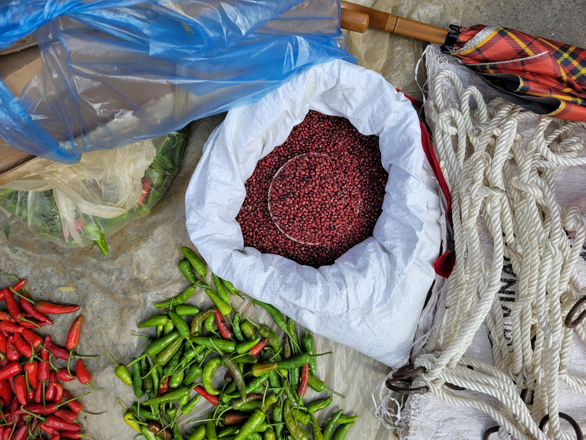
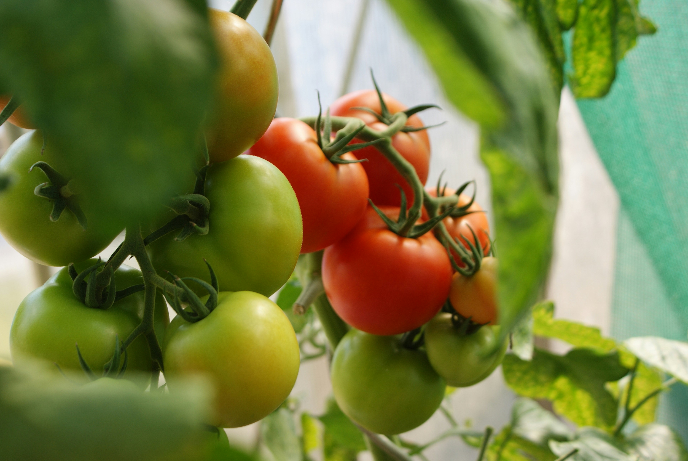
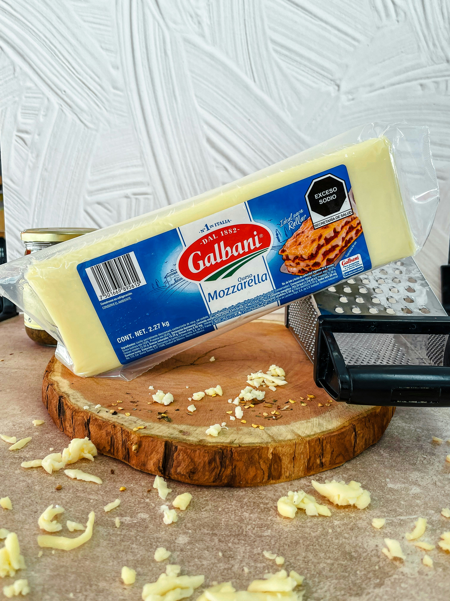
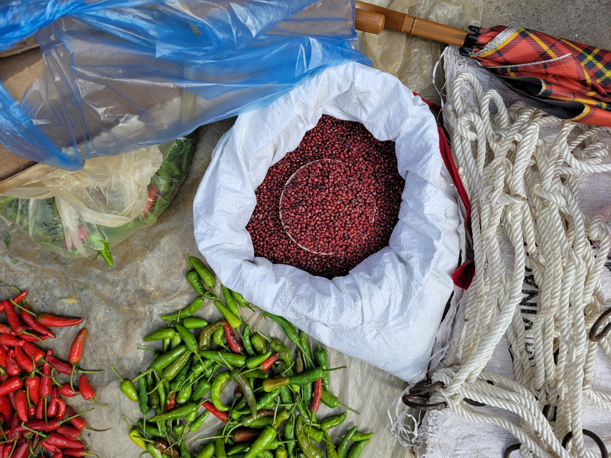
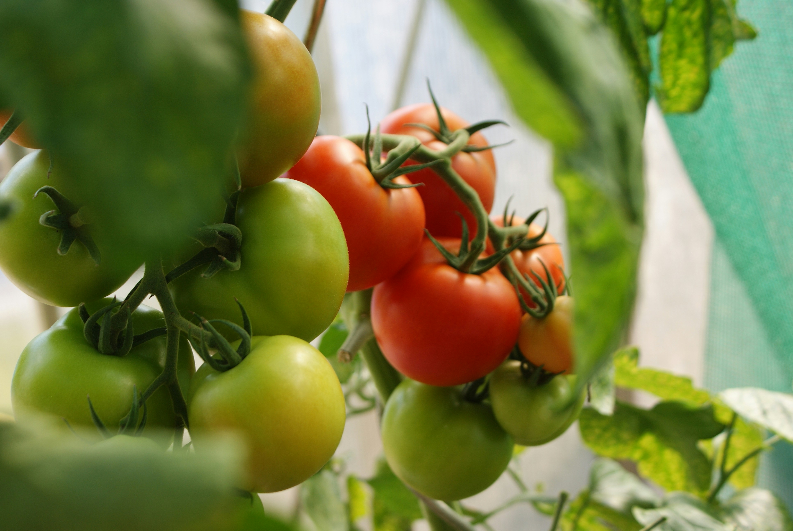
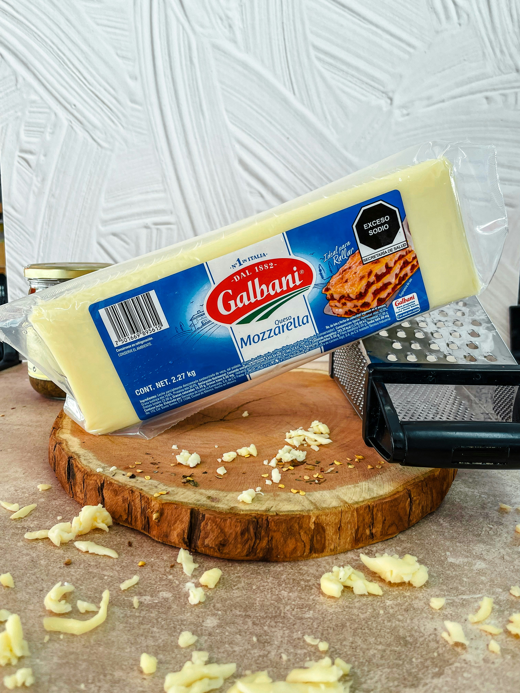

Anasayfa
Pizza Tarifi
Malzemeler
Hamur İçin:
- 3 su bardağı un
- 1 paket instant maya
- 1 su bardağı ılık su
- 1 yemek kaşığı zeytinyağı
- 1 tatlı kaşığı şeker ve 1 tatlı kaşığı tuz
Sos İçin:
- 1 su bardağı domates sosu (veya rendelenmiş domates)
- 1 tatlı kaşığı kekik
- 1 çay kaşığı tuz
- 1 yemek kaşığı zeytinyağı
- 1 diş sarımsak (ezilmiş)
Üzeri İçin:
- 2 su bardağı rendelenmiş mozzarella peyniri (veya kaşar peyniri)
- 10-12 dilim sucuk veya salam
- 1 adet yeşil ve kırmızı biber (ince dilimlenmiş)
- 1 adet domates (ince dilimlenmiş)
- 5-6 adet siyah zeytin (çekirdekleri çıkarılmış ve dilimlenmiş)
Malzeme Görselleri
 





Yapılışı
Hamuru Hazırlayın:
-
Bir kaba ılık suyu, şekeri ve mayayı koyup karıştırın. 5-10 dakika
mayanın aktifleşmesi için bekleyin. Unu geniş bir kaba eleyin, tuzu
ekleyin. Ortasını havuz gibi açıp mayalı suyu ve zeytinyağını ekleyin.
Hamuru pürüzsüz ve elastik bir kıvama gelene kadar yoğurun. Üzerini
örtüp ılık bir yerde yaklaşık 1 saat mayalanmaya bırakın.
Sosu Hazırlayın:
-
Küçük bir tavada zeytinyağını ısıtın. Ezilmiş sarımsağı ekleyip hafifçe
kavurun. Domates sosunu, kekik, tuz ve karabiberi ekleyin. Karıştırarak
birkaç dakika pişirin. Sosu ocaktan alın.
Pizzayı Hazırlayın:
-
Mayalanan hamuru unlanmış tezgah üzerinde açın ve yağlı kağıt serili
fırın tepsisine yerleştirin. Hazırladığınız domates sosunu hamurun
üzerine eşit şekilde yayın. Rendelenmiş peyniri üzerine serpin. Üzerine
sucuk, biber, domates, zeytin ve diğer dilediğiniz malzemeleri
yerleştirin.
Pizzayı Pişirin:
-
Fırını önceden 220 dereceye (428°F) ısıtın. Pizzayı fırına verin ve
15-20 dakika, kenarları kızarana ve peynirler eriyene kadar pişirin.
Servis Edin:
-
Fırından çıkarıp dilimleyin ve sıcak olarak servis edin. Afiyet olsun!